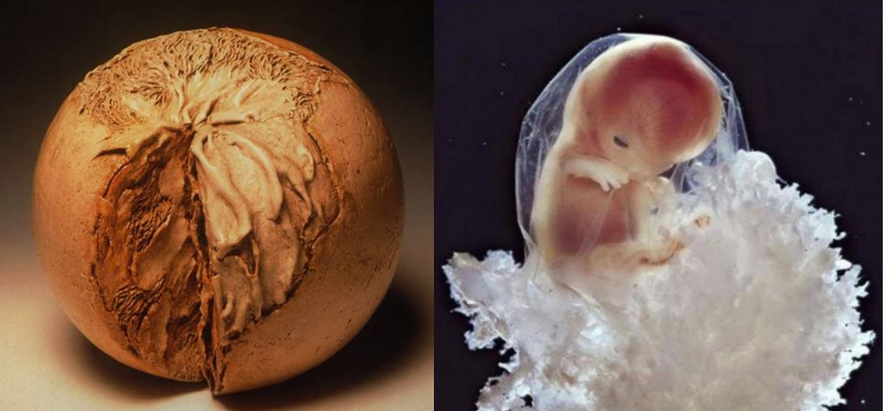

Cette perception résonne profondément avec ce qui m’anime : le mouvement et la danse me passionnent parce qu’ils me semblent au plus près de la vie intérieure de l’être humain.
La première expérience de vie, chez le bébé, n’est pas la pensée en mots. C’est une manière originaire de se sentir exister et d’être au monde, à travers le corps, le mouvement et les sensations. Le bébé se sent lui-même de façon directe, intuitive, présente et continue à travers ses sensations, ses gestes, ses appuis et son effort pour bouger. C'est cette écoute sensorielle que j'explore dans ma pratique. Elle devient le fil conducteur de mon accompagnement, qui propose de revisiter toutes les étapes et les niveaux du développement.
Plus je reviens à la genèse de mon histoire, plus j’expérimente ce qui m’organise et me ressource. En revisitant la fécondation, la respiration, la multiplication cellulaire et la formation de l'embryon, j'intègre des qualités de mouvement telles que l'expansion, la condensation et l'ondulation.

La plongée dans les schèmes neurocellulaires fondamentaux proposés par le BMC me ramène à l'origine du mouvement. Elle me fait prendre conscience que je suis sujet dès ma conception : un individu à part entière, unique.
Revenir sur son développement depuis les premières étapes, dès la conception, n'est pas une régression. Ce n'est pas non plus une fusion indistincte, comme certaines lectures psychanalytiques ont pu le suggérer.
Comme l'explique Marie-Ange (créatrice de l'ADDI), Daniel Stern considère au contraire le bébé comme déjà différencié de sa mère dès le début de sa vie : un être déjà entité, déjà acteur, doté d'une cohésion physique ressentie.
← Retour à l'accueil